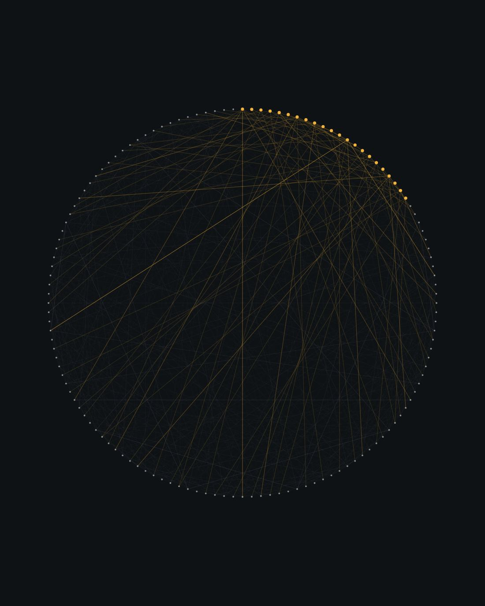

JPMorgan Chase & Co.
Jul 2026 — Present CurrentSDE 2 — core trading platforms, Asset Management
Modernizing a platform that cannot stop trading.
Services, data model and the screens the desk works in, replaced piece by piece — the swap invisible to the people using it.
Real capability every quarter while the system underneath changes — a desk should never be able to tell which quarter its screen started talking to a new service.